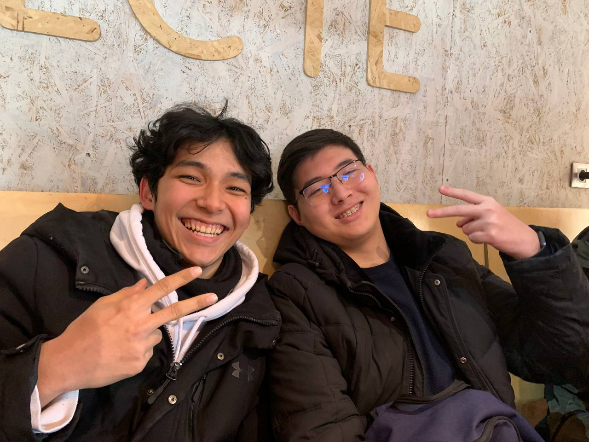
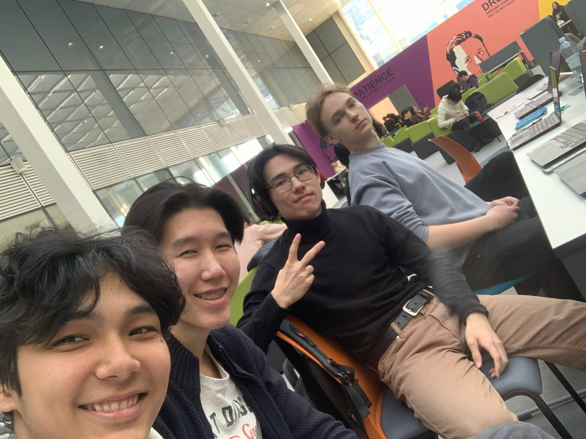
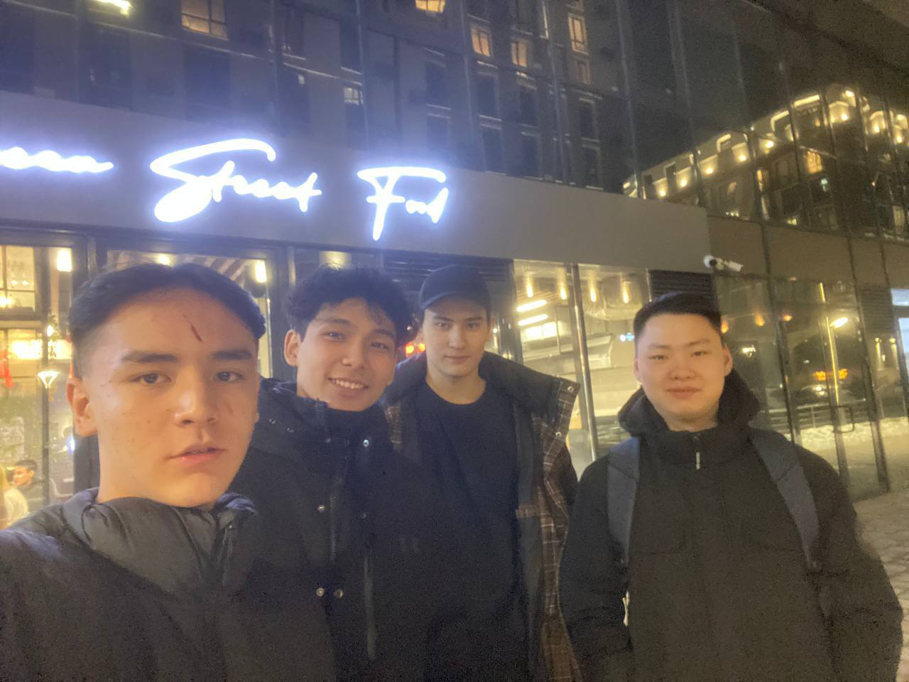
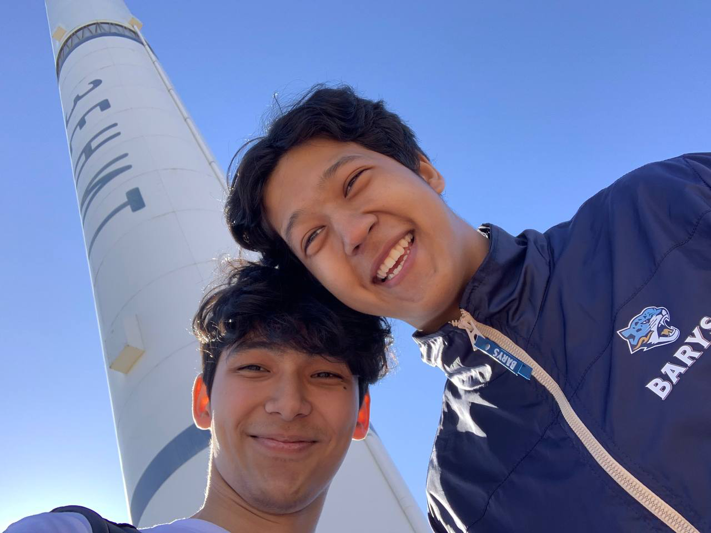
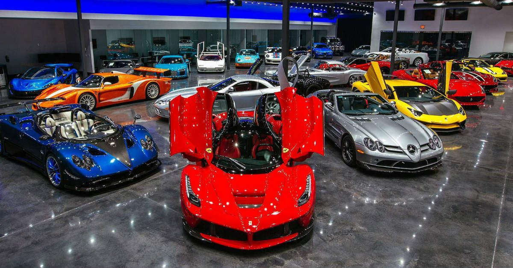

Who am I ?
Childhood
I was born in the beautiful city of Almaty, where I completed my secondary education at Lyceum 161. My childhood was wonderful, although not easy.
Sometimes I had to look and observe what I obviously did not want, but I am grateful to fate for every moment I lived.
Pre-adulthood
Sometimes I had to look and observe what I obviously did not want, but I am grateful to fate for every moment I lived.
Pre-adulthood
After graduating from school, I moved to a completely new city for me - Astana. At that time there was still Nursultan ha ha. The move was difficult for me and finding new friends and
adapting was something impossible for me. It was during this period that I faced all the difficulties of a student and it seemed that I was doomed. But it all tempered me and played a role in the future.
My classmates turned out to be wonderful people and every day going to the university was more and more interesting. I applied for the work and travel program and successfully passed it.
To be abroad and even in a place like the USA. It turned my mind and all my success lies precisely in this trip .I successfully passed the selection process at Air Astana and started the pilot career that I had dreamed of for so long. I will call this moment of my life the HAPPiest IN MY LIFE.
adapting was something impossible for me. It was during this period that I faced all the difficulties of a student and it seemed that I was doomed. But it all tempered me and played a role in the future.
My classmates turned out to be wonderful people and every day going to the university was more and more interesting. I applied for the work and travel program and successfully passed it.
To be abroad and even in a place like the USA. It turned my mind and all my success lies precisely in this trip .I successfully passed the selection process at Air Astana and started the pilot career that I had dreamed of for so long. I will call this moment of my life the HAPPiest IN MY LIFE.




Career and adult life
My career starts at the age of 21. From the moment I entered training abroad as an aircraft pilot. I learned quickly and it was not difficult to get the coveted license. I signed a contract with Air Astana and officially became the second pilot of the A-320 aircraft.

I received a good salary, loved every day of my work and quickly rose to the position of the chief pilot of the vessel. The company provides good career growth and after 10 years I receive an offer for the position of personal pilot of the President of the Republic of Kazakhstan. Of course, I agreed without hesitation. I have a lot achievements and acknowledgments, which I am very proud of. In total, I have about 16,000 flight hours.
Today
I received a good salary, loved every day of my work and quickly rose to the position of the chief pilot of the vessel. The company provides good career growth and after 10 years I receive an offer for the position of personal pilot of the President of the Republic of Kazakhstan. Of course, I agreed without hesitation. I have a lot achievements and acknowledgments, which I am very proud of. In total, I have about 16,000 flight hours.
Today
Today I am an investor and collector of rare and expensive cars. I have my own showroom that you can always visit. I also own the Kazyna restaurant chain and raise my grandchildren
